- Diseño de la pantalla
- Visualización del resultado
- Menú del clic derecho
- Trabajar con bloques
- Archivo
- Ejemplo
- Configuración
- Otros
Diseño de la pantalla
A la izquierda construyes los bloques, y a la derecha aparecen la regex y su resultado sobre el texto de destino.
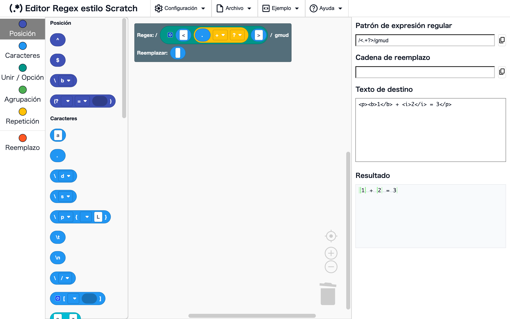
Espacio de trabajo y caja de herramientas
DóndeLado izquierdo de la pantalla
Arrastra bloques desde la caja de herramientas, en el extremo izquierdo, y suéltalos en el espacio de trabajo. El espacio de trabajo empieza con el bloque raíz, y la regex se construye a partir de los bloques conectados a él. Haz clic en el nombre de una categoría de la caja de herramientas para saltar a sus bloques.
Patrón de expresión regular, Cadena de reemplazo, Texto de destino y Resultado
DóndeLado derecho de la pantalla
- Patrón de expresión regular: la regex que construiste, mostrada como
/patrón/flags - Cadena de reemplazo: el reemplazo construido con los bloques conectados al hueco de Reemplazar de la raíz
- Texto de destino: escribe el texto con el que quieres probar la regex
- Resultado: el resultado de aplicar la regex al texto de destino (consulta Visualización del resultado)
Al cambiar los bloques o el texto de destino, la pantalla se actualiza al instante.
Visualización del resultado
El resultado muestra las coincidencias mientras el hueco de Reemplazar de la raíz está en "Sin reemplazo", y el texto reemplazado cuando conectas bloques de reemplazo.
Resaltado de coincidencias
DóndeResultado (cuando el hueco de Reemplazar está en "Sin reemplazo")
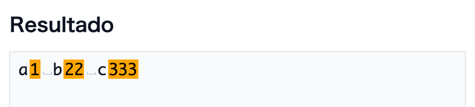
Las partes del texto de destino que coinciden con la regex se muestran en naranja.
Ejemplos
\d+→a1 b22
Resaltado de reemplazos
DóndeResultado (cuando hay bloques conectados al hueco de Reemplazar)
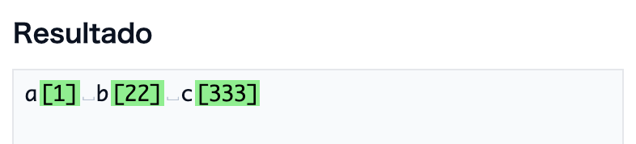
Se muestra el texto reemplazado, con las partes reemplazadas en verde.
Ejemplos
- Regex
\d+, reemplazo[$&]→a[1] b[22]
Espacios en blanco visibles
DóndeResultado
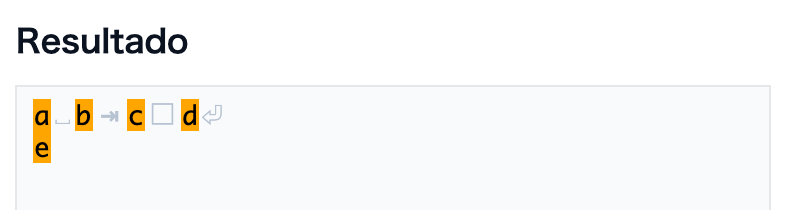
Los espacios en blanco invisibles se muestran como símbolos tenues.
␣: espacio□: espacio de ancho completo⇥: tabulación⏎: salto de línea
Nota
Los símbolos son solo para mostrar. Si copias desde el resultado, no se incluyen (se copian los espacios en blanco originales).
Visualización de errores
DóndeResultado
Cuando la regex no es válida (por ejemplo, un ( sin cerrar), el mensaje de error aparece en el resultado.
Menú del clic derecho
Haz clic derecho en un bloque (mantén pulsado en el móvil) para abrir un menú con acciones para ese bloque.
Las acciones que no se pueden usar aparecen atenuadas.
En los elementos con un ? a la derecha, al hacer clic en el ? se abre en una pestaña nueva la explicación de esa función en esta página.
Convertir en bloques / Convertir en texto
DóndeClic derecho en un bloque → "Convertir en bloques" / "Convertir en texto"
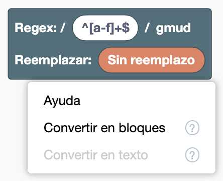
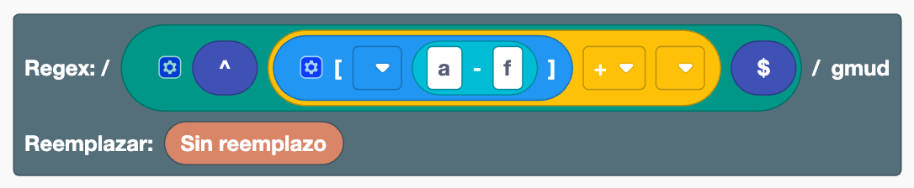
Convierte entre una regex escrita como texto y bloques, en ambos sentidos.
- Convertir en bloques: convierte un bloque de texto, o la regex escrita en el hueco de Regex de la raíz, en una combinación de bloques. Si haces clic derecho en la raíz, se convierte el contenido de su hueco de Regex.
- Convertir en texto: convierte el bloque en el que hiciste clic derecho, junto con los bloques que tiene dentro, en un solo bloque de texto. Si el bloque está conectado al hueco de Regex de la raíz, la raíz vuelve al estado en que la regex se escribe directamente en ella.
Ambas acciones se pueden deshacer con un solo Ctrl+Z (⌘+Z en Mac).
Ejemplos
- Escribe
^[a-f]+$en el hueco de Regex de la raíz y conviértelo en bloques → se convierte en una combinación de bloques de inicio de línea, clase de caracteres, rango,+y fin de línea
Nota
- Los bloques de texto dentro de un bloque
[ ]o en el hueco de Reemplazar no se pueden convertir por separado (escribe todo[a-f]como texto para convertirlo) - Al convertir en texto y volver a bloques, no se recuperan ajustes de visualización como Entradas externas
- Las partes que no tienen un bloque correspondiente (como
\x41) se quedan como bloques de texto
Agrupar N elementos / Desagrupar
DóndeClic derecho en un bloque dentro de Unir, Opción o Unir en el reemplazo → de "Agrupar 2 elementos" a "Agrupar 5 elementos", "Agrupar 6 o más elementos…", "Desagrupar"
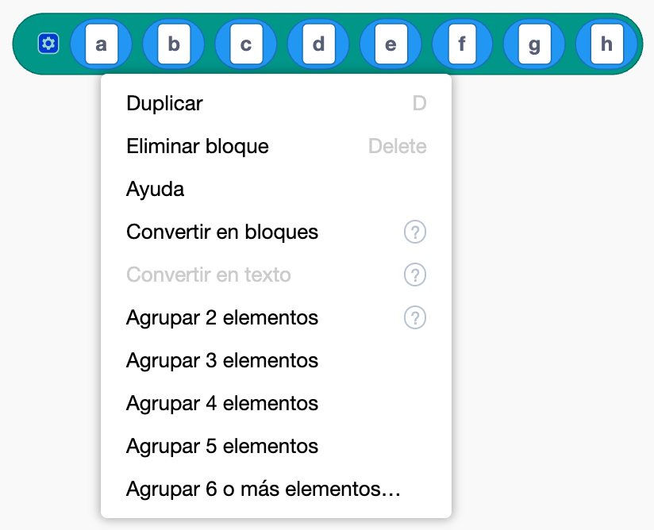

Reorganiza el contenido de un bloque Unir sin arrastrar.
- Agrupar N elementos: mete N elementos, empezando por el bloque en el que hiciste clic derecho y avanzando hacia la derecha, en un bloque nuevo del mismo tipo
- Agrupar 6 o más elementos…: pregunta el número de elementos y luego los agrupa
- Desagrupar: saca el contenido de un bloque interior del mismo tipo al bloque exterior, en la misma posición
Agrupar no cambia la regex que se construye. Combinado con Entradas externas / Entradas en línea, te ayuda a organizar una regex larga y compleja en partes con sentido, más fáciles de leer.
Ejemplos
- En un bloque Unir con "a" a "h", clic derecho en a → "Agrupar 4 elementos" → queda "(a b c d)", "e", "f", "g", "h"
Nota
No se puede usar dentro de una clase de caracteres [ ] (poner [ ] dentro de [ ] significaría otra cosa).
Entradas externas / Entradas en línea
DóndeClic derecho en un bloque con varios huecos → "Entradas externas" / "Entradas en línea"


Cambia cómo se colocan los huecos de un bloque. "Entradas externas" apila los huecos en vertical, y "Entradas en línea" los vuelve a poner en una fila. Así es más fácil leer un Unir o una Opción cuando se hacen largos. No cambia la regex que se construye.
Ayuda
DóndeClic derecho en un bloque → "Ayuda"
Abre la explicación de ese bloque en la Lista de bloques.
Trabajar con bloques
Las operaciones básicas con bloques son las mismas que en Scratch. En el móvil, puedes hacer lo mismo tocando y arrastrando.
Operaciones básicas
DóndeEspacio de trabajo
- Conectar: arrastra un bloque a un hueco (la parte vacía) de otro bloque
- Desconectar: arrastra hacia fuera un bloque conectado
- Eliminar: arrastra un bloque a la caja de herramientas o a la papelera, o selecciónalo y pulsa la tecla Delete
- Duplicar: clic derecho → "Duplicar". También puedes usar Ctrl+C / Ctrl+V (⌘+C / ⌘+V en Mac)
- Deshacer / rehacer: Ctrl+Z / Ctrl+Shift+Z (⌘+Z / ⌘+Shift+Z en Mac). También puedes hacer clic derecho en una zona vacía del espacio de trabajo
- Ordenar: clic derecho en una zona vacía del espacio de trabajo → "Organizar bloques"
- Acercar / alejar: los botones
+-de abajo a la derecha
Cambiar el número de huecos
DóndeHaz clic en el icono del engranaje de un bloque que lo tenga (Unir, Opción, Clase de caracteres, Unir en el reemplazo)
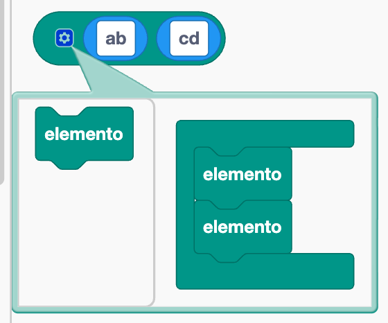
Se abre un pequeño editor. Al añadir o quitar los bloques "elemento" de dentro, cambia el número de huecos. Si reordenas los bloques "elemento", también se reordenan los huecos.
Crear, renombrar y eliminar nombres de grupo
DóndeEl menú desplegable de un grupo con nombre, una referencia hacia atrás con nombre o una referencia a grupo con nombre
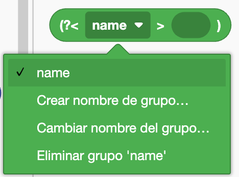
- Crear: elige "Crear nombre de grupo…" y escribe un nombre
- Renombrar: elige "Cambiar nombre del grupo…". El nombre también cambia en todos los bloques que lo usan
- Eliminar: elige "Eliminar grupo 'nombre'". También se eliminan los bloques que usan ese nombre
Nota
El nombre debe empezar por una letra y solo puede contener letras, dígitos y _. No puedes usar un nombre que ya existe.
Archivo
Se usan desde "Archivo" en el menú superior. Puedes guardar la regex que construiste como archivo y volver a cargarla.
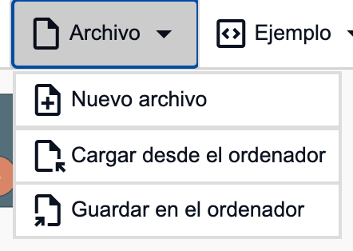
Nuevo archivo
DóndeArchivo → "Nuevo archivo"
Vacía el espacio de trabajo y el texto de destino, y vuelve al estado inicial.
Nota
Todo se borra sin pedir confirmación, y no se puede deshacer con Ctrl+Z. Guarda antes lo que quieras conservar.
Guardar
DóndeArchivo → "Guardar en el ordenador"
Descarga los bloques del espacio de trabajo y el texto de destino como un archivo JSON llamado regex_workspace.json.
Cargar
DóndeArchivo → "Cargar desde el ordenador"
Elige un archivo JSON guardado para recuperar los bloques y el texto de destino tal como estaban al guardarlos.
Nota
El contenido actual del espacio de trabajo se sustituye por el contenido cargado.
Ejemplo
Carga ejemplos desde "Ejemplo" en el menú superior. Después de cargar uno, cambia los bloques para ver cómo cambia el resultado.
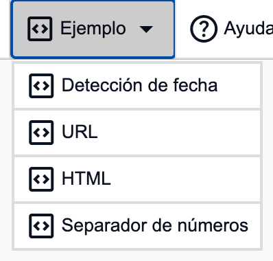
Nota
El contenido actual del espacio de trabajo se sustituye por el ejemplo.
Detección de fecha
DóndeEjemplo → "Detección de fecha"
Divide fechas y horas como 2025-08-20 14:21:03 en año, mes, día, hora y minuto con grupos, y las reorganiza como 2025/08/20⇥14:21 con un reemplazo.
URL
DóndeEjemplo → "URL"
Extrae el dominio y la ruta de las URL con grupos con nombre, y los convierte en "dominio→ruta" con un reemplazo.
HTML
DóndeEjemplo → "HTML"
Elimina solo las etiquetas HTML con <.+?>.
Quita el ? del bloque + para ver cómo se elimina todo (coincidencia perezosa).
Separador de números
DóndeEjemplo → "Separador de números"
Usa mirar atrás y mirar adelante para coincidir con las posiciones entre dígitos, y separa 1340 en 1, 3, 4, 0, dígito a dígito.
Configuración
Se usan desde "Configuración" en el menú superior.
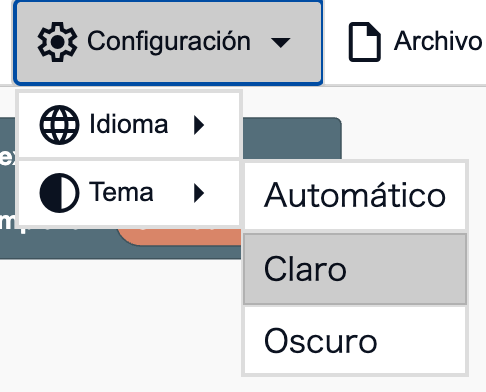
Nota
La configuración no se guarda, así que vuelve a los valores predeterminados al abrir de nuevo la página.
Tema
DóndeConfiguración → "Tema"
- Automático: cambia entre claro y oscuro según la configuración de tu dispositivo
- Claro: usa colores claros
- Oscuro: usa colores oscuros
Idioma
DóndeConfiguración → "Idioma"
Cambia el idioma de la pantalla y de los bloques. Puedes elegir entre 日本語, English, 简体中文, Español, 한국어 y हिंदी. Al principio, sigue el idioma de tu navegador (inglés si ese idioma no está disponible).
Otros
Abrir la referencia
DóndeAyuda → "Lista de bloques" / "Funciones"
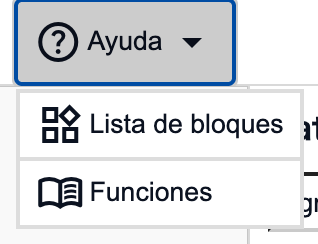
Abre la Lista de bloques o esta página (Funciones) en una pestaña nueva. Los bloques con los que estás trabajando se quedan como están.
Nota
La referencia está disponible en los mismos seis idiomas que el editor, y se abre en el idioma elegido en el editor.
Copiar
DóndeLos botones a la derecha de Patrón de expresión regular y Cadena de reemplazo
Copia el patrón de la regex (como /patrón/flags) o la cadena de reemplazo al portapapeles.
Puedes pegarlo en tu propio programa.
Escribir tabulaciones en el texto de destino
DóndeTexto de destino
Al pulsar la tecla Tab en el campo Texto de destino, se inserta un carácter de tabulación en lugar de pasar a otro campo. Es útil para probar datos separados por tabulaciones.